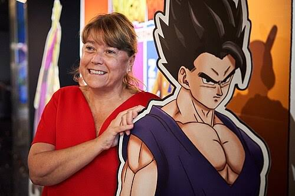

Goku y Vegeta siguen siendo protagonistas de una de las sagas más famosas.
La reflexión de Akira Toriyama sobre Gohan en Dragon Ball: 'Siempre fue diferente de su padre; realmente odia luchar'

El hijo de Goku siempre ha poseído un potencial excepcional, pero su creador tenía la intención de que no imitara el comportamiento de su padre. En una conversación de 2004 con Masako Nozawa, la actriz de voz japonesa de Goku y Gohan, y el guionista Takao Koyama, recogida en el libro Dragon Ball Tenka'ichi Densetsu, el creador explicó cómo entendía la personalidad del joven saiyan. Cuando se habló de su evolución y de su relación con los combates, Toriyama fue bastante explícito:
"Gohan lo tiene difícil, porque quiere ser un estudioso, pero en lugar de eso tiene que luchar. Mientras lo dibujaba, siempre pensaba: es diferente de su padre; realmente debe odiar luchar".
La declaración ayuda a comprender algunas de las decisiones más discutidas de la saga. Después de derrotar a Cell y convertirse en uno de los guerreros más poderosos de la Tierra, Gohan no continuó entrenando con la misma dedicación que Goku o Vegeta. Su prioridad pasó a ser su formación académica y la posibilidad de construir una vida alejada de las amenazas que habían marcado su infancia.